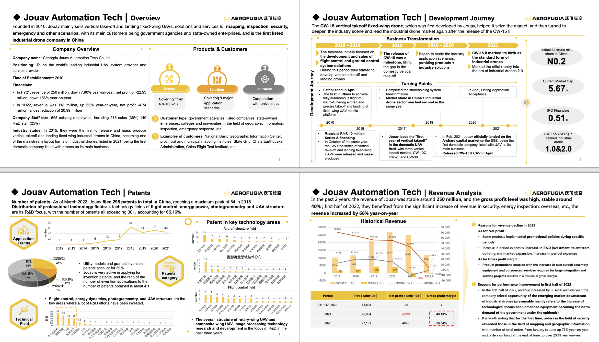
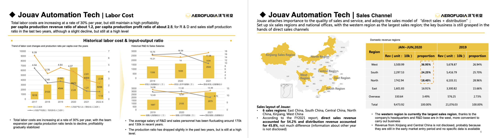
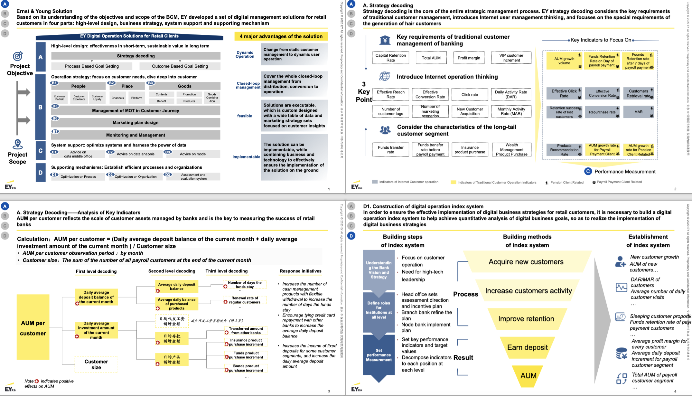
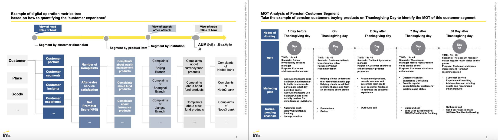

Project Background: The client is an industrial drone startup. My responsibility is to complete a company analysis of our competitor, which a listed industrial drone company that is very well known in the Chinese industrial drone market, covering basic company information,
business lines and specific products, disclosed financial and organizational data, customers and channels, etc. The goal was to help the client expand its market share, find a segment as a focus point and build its reputation.
Framework and Analysis Results: I decomposed the overall analysis into four parts: basic business situation, business and products, financial situation, and organizational efficiency, and concluded that the competitor's advantages mainly lie in 1.
The competitor has been "exploring and developing forward-looking application scenarios" as its product and solution development direction, so it is the first to enter many fields; 3. Scale advantage: the competitor has laid out both upstream and downstream business, which makes its bargaining power stronger.
Contribution: Based on this complete and insightful report, the client eventually choose to avoid the "geographic information mapping" field that the giants are competing to capture, and instead focused on border security, police, and other areas where public security agencies and special forces are target customers,
and plan to launch new solutions around keywords such as '5g', 'smart', and 'sustainable development' based on ESG policy requirements, which eventually help the client readjust its product plan to focus on new opportunities.


Project Background: The client is a state-owned joint-stock bank, and with the impact of the digital wave driven by the epidemic, they have hit a bottleneck in operating their retail banking customer base, especially their long-tail customer base, with weak AUM increment,
declining customer stickiness, declining capital retention, and also they have limited experience in how to systematically use digital tools and instruments. So our team's task was to delivery a complete, top-to-bottom implementable solution. Our solution covered four parts: strategy, operation, IT construction, and supporting mechanism.
My responsibility predominantly was to help build digital metrics(in the 'supporting mechanism' section) and optimize operation strategy based on the concept of “people, place, goods” and conduct customer journey analysis (in the 'operation' section).
Framework and Results: In the process of establishing digital metrics, I knew about that the client wanted to learn from the operation methodology of internet operation of individual customers, so I took the client's business scenario into consideration to select suitable indicators, and combined them with the static indicators of traditional bank to build a digital metrics system.
And the metrics system can be dismantled layer by layer, from the head office to the node bank, that is, to form a digital metrics tree. In the process of optimizing the operation strategy, I proposed to build a dashboard to better visually segment customers, and innovatively proposed to build word clouds of possible interest for each customer group to provide a thesaurus for accurate marketing.
In the process of customer journey analysis, I analyze the MOT of channels, promotion materials, venues, products, etc. from the 5A theory(Aware, Appeal, Ask, Act, Advocate) of marketing, so as to establish a reasonable and effective analysis.
Contribution: The digital metrics system that I established met the client's needs very well, allowing the client to take advantage of operation methodology of internet technology companies and combined with the bank's traditional attributes to have a better perception of its own performance and to be able to manage it in a seamless and fine-grained way. Customer dashboards and customer journey analysis
allowed the client to assess whether they were meeting the needs and pain points of its customers from the customer's point of view, reconstructing the perception of its own customer base, and optimizing the operational process to provide effective suggestions on how the client should finely operate this large and diverse group of people with different preferences.